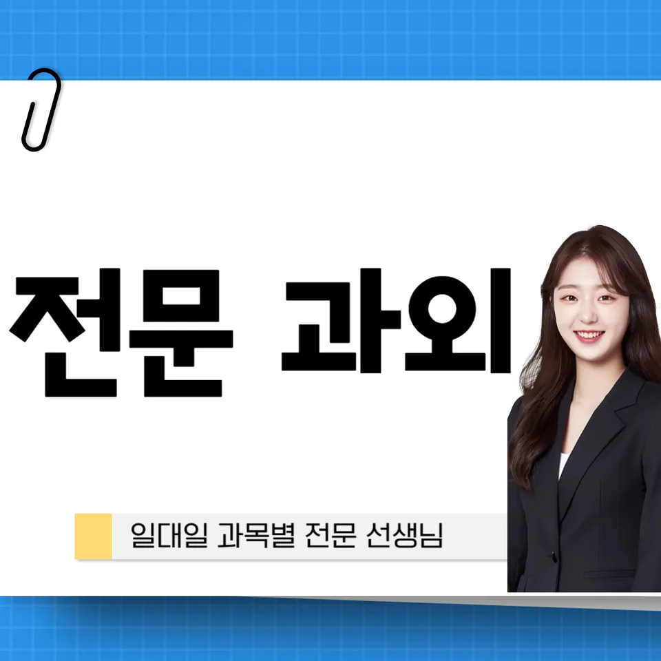

PageType : SUBJECT
URL : /경기도과외/오산시과외/세교동과외/세교동수학과외/
지역 교육환경이 수학 학습에 미치는 영향
세교동수학과외를 찾는 학생들은 대체로 주중에는 학교 수업과 수행평가 준비, 주말에는 문제풀이와 정리 시간을 함께 가져가려는 분위기 속에 있습니다. 지역마다 학원·스터디 공간의 밀도가 달라 수업 이후 남는 시간의 질이 달라지는데, 그 차이가 결국 수학 학습의 속도와 태도에 영향을 줍니다. 특히 세교동수학과외 환경에서는 “수업에서 본 개념을 집에서 어떻게 이어갈지”를 먼저 정리하는 경우가 많아, 같은 범위를 공부해도 학습 시간의 낭비가 줄어드는 편입니다.
학교 일정이 촘촘한 시기에는 학생이 계산보다 개념의 연결을 놓치기 쉽습니다. 그래서 세교동수학과외에서는 수학 학습을 단순히 진도를 채우는 공부로 보지 않고, 학교에서 어떤 방식으로 설명이 이어지는지 점검한 뒤 공부 방식도 조정하려고 합니다. 이 과정에서 학생은 수학을 “처리해야 하는 숙제”가 아니라 “이해와 검증이 반복되는 공부”로 받아들이게 됩니다.
학부모는 지역 교육 분위기 탓에 시험 대비가 과도하게 빠르게 진행된다고 느끼기도 하지만, 실제로는 학생의 내신 준비가 어느 단원에서 멈추었는지 파악하지 못하면 복습이 뒤엉키는 일이 생깁니다. 세교동수학과외는 그 혼선을 줄이기 위해 수업 직후 학습 습관을 어떻게 고정할지부터 잡습니다. 이때 공부 시간 자체보다 “학습 흐름이 끊기지 않는 방식”이 더 중요해집니다.
학교별 평가 방식과 학습 방향
학교마다 수학 평가의 균형이 달라서, 같은 학생이라도 접근 전략이 달라져야 합니다. 어떤 학교는 내신에서 서술형 비중이 커서 풀이 과정의 논리가 드러나야 하고, 다른 학교는 객관식이 상대적으로 비중이 높아 정확성과 속도가 중요해집니다. 이 차이는 세교동수학과외 수업에서 학습 방향을 정할 때 중요한 기준이 됩니다.
수행평가는 특히 학생이 개념을 말로 설명하는 능력이나 단계별 사고를 요구하는 형태로 나타나기 쉽습니다. 그래서 세교동수학과외에서는 “답을 맞추는 훈련”보다 “왜 그렇게 되는지 확인하는 태도”를 먼저 다듬습니다. 학생은 자신의 풀이를 다시 읽어보며, 틀린 이유가 실수인지 이해 부족인지 구분하는 연습을 하게 됩니다.
세교동수학과외를 통해 학교별 평가 방식을 맞추면, 시험이 다가올수록 불안이 커지는 양상이 줄어듭니다. 시험 전에는 단기 성과만 끌어올리기보다, 학교가 요구하는 형태로 오답이 정리되게 만드는 편이 결과를 흔들리지 않게 해줍니다. 결국 학습의 방향은 “무엇을 공부하느냐”뿐 아니라 “어떤 방식으로 증명하느냐”로 결정됩니다.
학생들이 수학을 어려워하는 주요 원인
학생들이 수학을 어려워하는 시기는 대개 개념이 누적되는 시점과 맞물립니다. 처음에는 계산이나 단계를 따라가는 데 큰 어려움이 없더라도, 어느 순간부터는 문제 해결 과정에서 개념을 조합해야 해서 막히곤 합니다. 세교동수학과외에서는 그 막힘을 “의욕 부족”으로 보지 않고, 이해의 연결 고리가 끊긴 지점을 찾는 데 집중합니다.
많은 학생이 개념을 알고 있다고 믿지만, 실제 문제에서 활용이 되지 않는 경우가 많습니다. 이때 오답은 단순히 틀린 답을 기록하는 데서 그치지 않고, 학생이 어디에서 사고를 멈췄는지 추적하는 자료가 됩니다. 세교동수학과외의 학습 흐름은 오답을 통해 다음 학습을 설계하도록 구성되어, 같은 실수를 반복하는 시간을 줄입니다.
또 다른 원인은 학습 관리가 끊기는 경험입니다. 시험 직전에 공부가 몰리면 복습이 부족해지고, 새 개념을 배울 때 이전 개념이 흔들리면서 더 큰 혼란이 옵니다. 세교동수학과외에서는 “언제 무엇을 복습할지”를 일정으로 고정해, 불안이 커지기 전에 정리 습관이 만들어지도록 돕습니다.
학년 변화에 따른 수학 학습의 차이
학년이 올라가며 수학 학습 부담은 단순히 문제 수가 늘어서가 아니라, 사고의 요구 수준이 달라지는 데서 커집니다. 중간 난이도에서는 개념을 묻는 질문이 비교적 직접적일 수 있지만, 학년이 올라갈수록 조건을 해석하고 관계를 세우는 과정이 늘어납니다. 그래서 세교동수학과외에서는 학습 과제를 점점 더 “이해-활용-검증” 순서로 바꾸어 줍니다.
학년 전환기에는 자기주도학습의 역할이 중요해집니다. 학교에서 수업을 들었다고 끝나는 것이 아니라, 학생이 스스로 복습 계획을 세우고 오답을 분류해 다시 풀어보는 단계까지 이어져야 학습이 유지됩니다. 세교동수학과외에서는 학생이 공부를 ‘미루지 않는 방식’을 익히게 하는 데 초점을 둡니다.
학부모가 체감하는 변화도 큽니다. 이전 학년에서는 “문제집을 끝냈는지”가 핵심이었다면, 다음 학년에서는 “틀린 이유를 설명할 수 있는지”가 중요한 기준이 됩니다. 이 기준에 맞추면 내신 준비가 더 정교해지고, 시험 기간에 흔들리는 학습 패턴도 완화됩니다.
꾸준한 학습이 실력으로 이어지는 과정
세교동수학과외에서 자주 확인하는 점은, 실력이 단번에 올라가지 않고 꾸준한 공부습관 속에서 축적된다는 사실입니다. 특히 수학은 개념을 이해한 뒤에도 복습이 있어야 기억이 안정되고, 문제 해결력이 실제로 작동합니다. 그래서 복습은 단순한 재시도가 아니라, 다음 문제에서 활용하기 위한 점검 과정으로 설계됩니다.
계획적인 학습 습관은 결국 시간 효율로 연결됩니다. 학생이 공부 시간을 늘리기보다, 수업-복습-오답 정리의 순서를 지키면 같은 시간 안에서도 학습 밀도가 달라집니다. 세교동수학과외는 시험 대비가 시작되기 전부터 시험 기간 학습 패턴이 바뀌도록 유도합니다. 예를 들어, 시험 직전에는 새로운 문제를 무조건 늘리기보다 지난 오답을 다시 확인하는 비중을 정합니다.
이 과정에서 사고력이 성장하는 경험이 쌓입니다. 학생은 처음에는 어려운 문제를 만나면 빨리 포기하려 하지만, 반복되는 오답 분석과 복습이 쌓이면 “왜 막혔는지”를 말로 풀어내는 수준까지 도달합니다. 결국 수학 학습에서 자신감은 성적표가 아니라, 공부 흐름이 지속될 때 자연스럽게 형성됩니다.
문제 해결력을 키우는 학습 습관
문제 해결은 정답을 찾는 기술이기보다 사고의 순서를 익히는 과정입니다. 세교동수학과외에서는 학생이 문제를 읽고 조건을 정리한 뒤, 무엇을 먼저 확인할지 판단하는 습관을 만듭니다. 이때 학생은 “풀이를 외우는 것”이 아니라 “풀이가 왜 그렇게 이어지는지”를 점검하는 연습을 하게 됩니다.
오답을 만났을 때의 반응도 핵심입니다. 어떤 학생은 틀리면 다음으로 넘어가지만, 또 다른 학생은 왜 틀렸는지 따져보며 같은 유형에서 실수를 줄입니다. 세교동수학과외는 오답을 분석하고 반복을 줄이는 과정에 무게를 둡니다. 결과적으로 학생은 문제를 만날 때마다 계획을 세우고, 그 계획이 작동했는지 확인하는 습관을 갖게 됩니다.
학교 내신에서 서술형이 포함된 경우에도 이 습관은 중요합니다. 단순히 계산이 정확해도 설명 흐름이 비어 있으면 감점이 생길 수 있기 때문입니다. 그래서 학생은 문제 해결 과정에서 근거를 정리하는 방식도 함께 학습합니다. 세교동수학과외는 이런 연결을 “개념 이해 → 활용 → 검증”으로 이어지게 잡아 학생이 수학을 통째로 다루는 경험을 하도록 합니다.
복습과 학습 관리가 중요한 이유
복습이 부족하면 시험이 다가올수록 같은 단원을 다시 배우는 느낌이 들고, 이때 학습 부담이 급격히 커집니다. 세교동수학과외에서는 복습을 ‘나중에 할 일’로 미루지 않게 하여 학습 관리의 기준을 명확히 합니다. 학생은 수업에서 나온 개념을 집에서 다시 재구성하고, 틀린 부분만 선별해 반복합니다.
학습 관리는 단지 일정표를 채우는 일이 아닙니다. 무엇을 공부했는지 기록하면서 오답을 유형별로 바라보면, 다음 공부의 방향이 자연스럽게 정해집니다. 학부모도 이 과정을 보면 “어디가 부족한지”가 구체적으로 보이기 때문에 교육 고민이 단순한 진도 경쟁에서 벗어납니다.
시험 기간에는 특히 학습 패턴이 흔들리기 쉽습니다. 수업이 끝난 뒤 바로 풀어야 할 문제가 남아 있으면 학생은 피로가 누적되고, 그 피로가 사고력을 떨어뜨립니다. 세교동수학과외는 복습 시간을 짧더라도 꾸준히 확보해 사고력이 계속 작동하도록 구성합니다. 이렇게 하면 시험 전날에 몰아서 하는 공부가 줄어들고, 계획적인 공부습관이 자리 잡습니다.
수학 학습에서 확인해야 할 핵심 요소
세교동수학과외를 통해 학생의 학습 변화를 점검할 때는 “지금 이해가 되었는지”와 “다음에 다시 쓸 수 있는지”를 함께 봅니다. 단원별로 개념을 암기했는지 여부보다, 학교 수업에서 제시된 관찰과 사고 과정이 문제 해결로 이어지는지 살펴야 합니다. 또한 오답을 정리할 때는 감정이 아니라 원인 중심으로 기록하도록 돕습니다.
가정에서의 학습 환경도 중요합니다. 학생이 집중이 깨지는 시간대가 언제인지, 복습이 끊기는 날이 반복되는지 파악하면 학습 개선의 우선순위가 정해집니다. 학교와 가정에서 이어지는 환경이 맞물리면 수학 학습에서 자신감이 점진적으로 커집니다. 세교동수학과외는 이러한 연결을 통해 사고력이 성장하는 학습 경험이 누적되도록 설계됩니다.
수업을 따라가는 속도는 학생마다 다르지만, 성장 속도는 결국 학습 과정의 질로 결정됩니다. 학생이 자신의 공부를 점검하고 수정하는 순간, 문제 해결력이 서서히 자리를 잡습니다. 세교동수학과외는 그 핵심 요소를 꾸준히 확인하면서 학습이 흔들리지 않게 만드는 데 집중합니다.
- 학교 수업과 시험 범위에 맞는 학습 계획을 세우고 있는지 확인합니다.
- 개념을 암기하는 데 그치지 않고 문제 해결 과정에 활용하고 있는지 점검합니다.
- 틀린 문제를 다시 풀어보며 실수의 원인을 꾸준히 분석합니다.
- 단기 성과보다 지속적인 복습과 학습 습관을 유지하고 있는지 살펴봅니다.
자주 묻는 질문
수학 학습은 언제부터 체계적으로 준비하는 것이 좋을까요?
학년이 올라가기 전부터, 특히 개념 누적이 시작되는 구간에서 계획을 잡는 것이 좋습니다. 세교동수학과외에서는 수업에서 다룬 개념을 같은 주에 복습으로 연결해 사고력이 유지되게 합니다.
학교 내신과 수행평가는 어떻게 함께 준비하면 좋을까요?
내신은 시험 범위에 맞춰 정리하되, 수행평가는 설명과 과정이 드러나도록 학습 기록을 남기는 편이 유리합니다. 세교동수학과외는 학교별 평가 방향에 맞춰 오답 정리 방식까지 조정합니다.
수학 개념이 부족한 학생도 학습 흐름을 따라갈 수 있을까요?
가능합니다. 핵심은 부족한 개념을 “다시 처음부터”가 아니라, 지금 막히는 지점부터 확인하는 방식으로 채우는 것입니다. 세교동수학과외에서는 이해 연결 고리를 찾아 학습이 이어지게 만듭니다.
문제 해결력은 어떤 과정을 통해 향상될 수 있을까요?
문제를 풀고 끝내기보다, 읽기-조건 정리-선택-검증의 순서를 스스로 설명하게 만들면 서서히 성장합니다. 오답 분석과 반복을 줄이는 과정이 함께 갈 때 효과가 커집니다.
꾸준한 학습 습관은 어떻게 만들어갈 수 있을까요?
큰 목표보다 짧은 복습 루틴을 고정하는 편이 현실적입니다. 시험 기간에도 학습 패턴이 흔들리지 않도록 계획적인 공부습관을 반복하며, 세교동수학과외에서는 자기주도학습이 자리 잡는 흐름을 함께 만듭니다.
